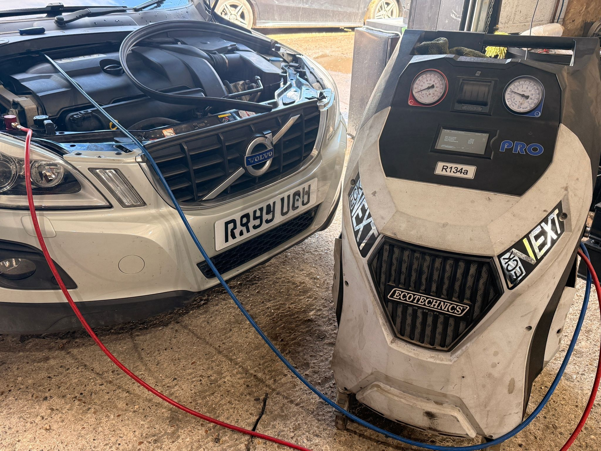
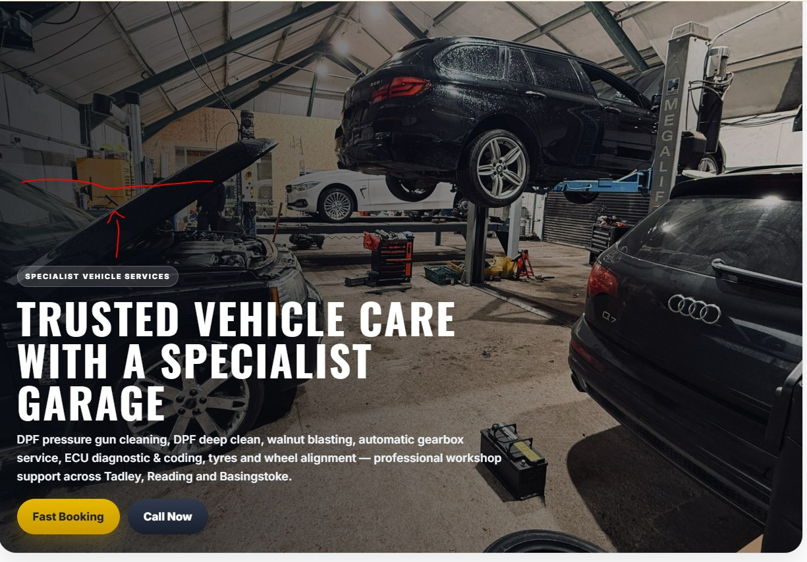

Tadley • Reading • Basingstoke
Call 07920 778706
Specialist Vehicle Services
Trusted Vehicle Care With A Specialist Garage
DPF pressure gun cleaning, DPF deep clean, walnut blasting, automatic gearbox service, ECU diagnostic & coding, tyres and wheel alignment — professional workshop support across Tadley, Reading and Basingstoke.
Monthly Offers
Monthly Offers
Current seasonal offers at AG Auto-Tech Tadley.

A/C Service & Refill
Air conditioning service and refill to keep your car cool and fresh.
View Offer
Full Service
Complete service check for reliability, safety and peace of mind.
View Offer
Wheel Alignment
Improve handling, tyre wear and road feel with professional alignment.
View OfferService Pages
Choose The Service You Need
Each service has its own fast SEO landing page with pricing where available, risk information and booking.

From £160
DPF Pressure Gun Cleaning
DPF Pressure Gun Cleaning is a specialist DPF cleaning service carried out with a pressurised cleaning gun system. This metho...

Carbon Removal
Walnut Blasting
Walnut blasting is a specialist carbon cleaning process designed to remove carbon build-up from intake-related areas. This he...

From £299
Automatic Gearbox Service
Automatic gearbox service is aimed at improving shift quality and supporting the long-term condition of the gearbox. We use a...

From £60
ECU Diagnostic & Coding
ECU Diagnostic & Coding is designed for electronic diagnostics, coding support, control module work and vehicle software-rela...

From £220
DPF Deep Clean
DPF Deep Clean is a targeted specialist cleaning process using dedicated equipment and products for selected DPF-related issu...
Prices Listed
Wheel Alignment
Wheel alignment helps correct the angle of the wheels so the vehicle drives straighter, handles better and wears tyres more e...

Supply & Fit
Tyres
Tyre supply and fitting available. Send us your tyre size, quantity, tyre type and preferred range so we can help you choose ...
UPDATED MONTHLY
Monthly Offers
Current discounts, seasonal promotions and limited-time service offers.
Why Choose Us
Specialist Garage Approach
Specialist EquipmentProfessional tools and service processes for DPF, gearbox, coding and alignment work.
Honest DiagnosticsWe focus on the real cause before replacing unnecessary parts.
Local & FastEasy WhatsApp booking for Tadley, Reading, Basingstoke and nearby areas.
Google Reviews
Real Google Reviews
Click below to view our live Google reviews. If you want reviews embedded directly on the page, send me the exact review texts or connect a Google Reviews widget/API.
★★★★★
View our real, live Google reviews directly on Google.
Find Us
Ash Park Business Centre, Little London, Tadley RG26 5FL